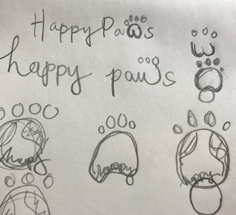

Logo Design
Sketches in paw-gress
For the HappyPaws’ logo, I explored both logomark and logotype designs. With quick sketches, I was able to test the strength of ideas and narrowed the choices to two main concepts: A paw print or HappyPaws.

Paper sketches for HappyPaws logo.
Dog-Friendly World
The paw print logomark concept was inspired by the idea of a dog friendly world. It fuses together a globe and paw print similar to the sketches above. The design is improved to clearly display ‘happy paws’ to avoid confusion about the app’s name. An issue with this logomark was the proportion of ‘HappyPaws’ compared to the size of the paw print. The paw size overwhelms the name, competing for users’ attention.
Initial logomark design.
The Short Paw
This logomark is a simplified version of the previous concept allowing it to translate more successfully at different scales. The words ‘HappyPaws’ is increased in weight, asserting hierarchy over a shorten paw print.
Simplified paw print on logomark.
Ruff vision
This logo is a combination of a mark and typeface. The letters are displayed in typeface with the exception of ‘w’ which is represented by the lower portions of the paw. This logo failed the legibility test because it may not be obvious that the paw is also a ‘w.’ Matching the paw’s line thickness to the font weight would create competition due to the paw’s size.
Initial logotype design.
Paw-fecting the W
This revision addresses the issue of mis-matched character weight. The removal of the paw’s upper pad increases the legibility of the ‘w’. Tracking is reduced and the bottom of the ‘w’ is pulled slightly below the baseline to match the typeface’s scale.
Refined logomark .
Pawsome
I wanted the logo to feel calming and naturey to tie back to the tonial identity. The brown ‘w’ represents dogs getting their paws dirty when going outside to spending time with their owners. The text is outlined in white which transforms the logo into one cohesive unit. The outline creates a bubbly and playful affect that ties into the brand’s identity, while also providing contrast against darker backgrounds.
Finalized design for HappyPaws' logo with color.